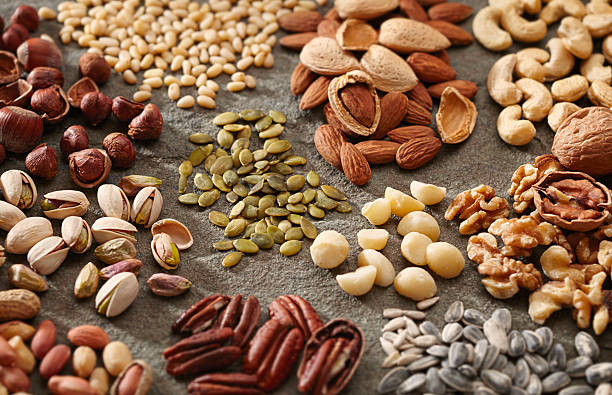

Nuts & Seeds

-
Carbohydrate Content: Nuts and seeds vary, with almonds, pecans,
and walnuts containing 1-4 grams of net carbs per ounce, while
higher-carb nuts like cashews have around 8 grams per ounce.
-
Fiber Content: The high fiber content in most nuts and seeds
helps lower the net carb count, and they also provide healthy fats and
protein, making them popular on low-carb diets.